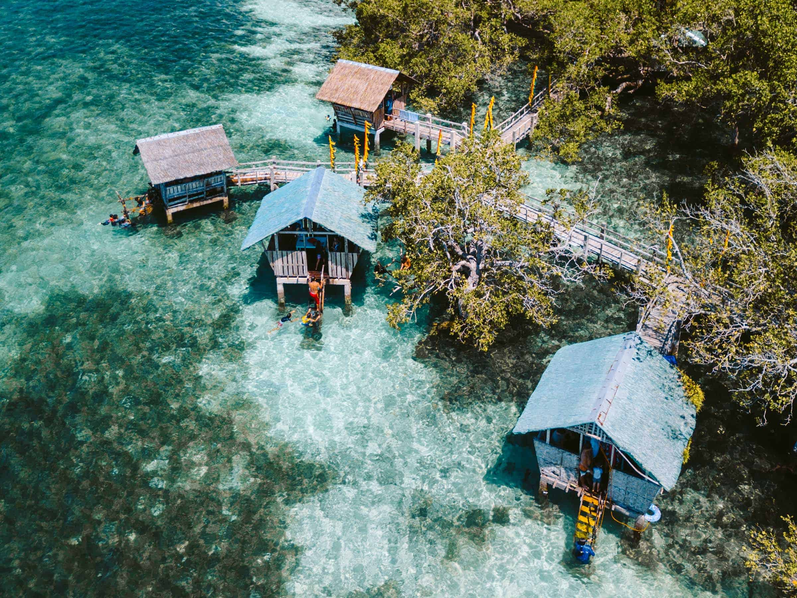
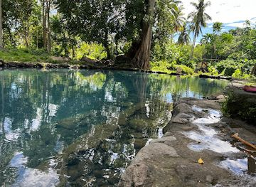
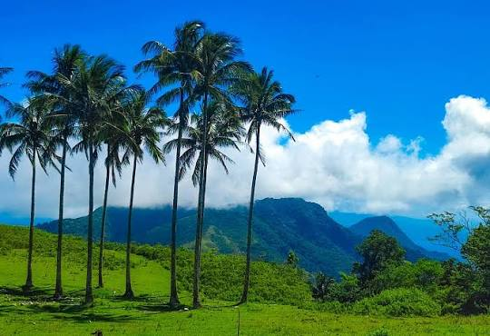

Island & Sandbar
Mantigue Island
A small coral islet off Mahinog's shore, ringed by a white sandbar and clear turquoise water. Popular for snorkeling, swimming, and short boat tours from the mainland.
Island Hopping & Nature
Six destinations that capture the natural beauty of Mahinog.
A small coral islet off Mahinog's shore, ringed by a white sandbar and clear turquoise water. Popular for snorkeling, swimming, and short boat tours from the mainland.

A peaceful boardwalk trail through dense mangrove forest, home to native birds and a favorite spot for quiet nature walks and photography.

A calm, shallow lagoon surrounded by nipa huts and coconut trees — an easygoing spot for picnics, paddling, and local gatherings.

A natural spring, known for its crystal-clear, icy-blue waters and lush, undeveloped surroundings, the spot is a popular, free natural attraction.

A scenic vantage point perched atop a hill. It provides visitors with panoramic, breathtaking views of Camiguin Island, the surrounding coastline, and the lush terrain.

A scenic mountain in Mahinog, Camiguin, known for its lush greenery, cool mountain air, and breathtaking views of the island and surrounding sea. Popular among hikers and nature lovers, Mt. Luwan offers a peaceful escape and a chance to experience the natural beauty of eastern Camiguin.